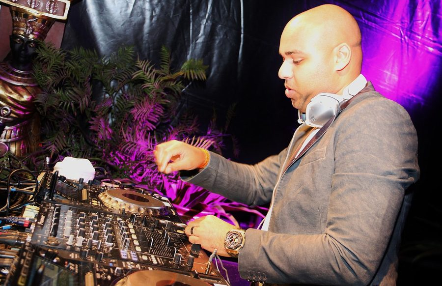

Sundae Fundaze returns to Newcastle with Sidney Samson



Sundae Fundaze has been entertaining Newcastle punters at the Clarendon Hotel since the summer of 2005, hosting big wigs behind the decks like Kim from the Presets, the Bang Gang as well as international guests like Fake Blood. To mark the beginning of Spring, Sundae Fundaze is back this weekend with local favourites Ajax and Kato, as well as a special guest in the form of Riverside heavyweight Sidney Samson.
Prior to his breakthrough success this year, Sidney Samson’s heritage in clubbing stretches all the way back to when he played urban and RnB the mid 90s, before he headed over the dark side of house later in the decade. He stepped it up in 2007 when he started the Samsobeats record label with his production partner Gregor Salto. Riverside cometh…
Catch Sidney Samson when he plays Sundae Fundaze at the Clarendon Hotel I Newcastle, this Sunday September 6th.